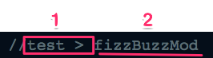
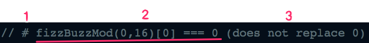
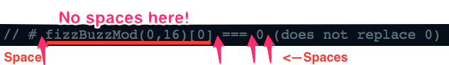
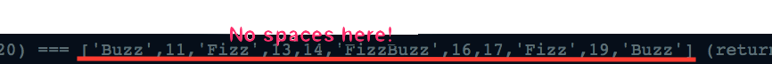

Using SpeckJS to Simplify Unit Testing
javascript tddSpeckJS is “an npm module that parses JavaScript comments and outputs unit-tests.” It allows you to implement TDD into your projects quickly and efficiently from within you main js files.
Here, I’ll briefly describe how to set-up and use SpeckJS with a vanilla install, and with their Gulp.js plugin. SpeckJS also has plugins for GruntJS and Atom if those are more your style. SpeckJS can be used to build tests in Tape, Mocha and Jasmine; we’ll just use the default settings to create tests build in Tape for now.
Take a peek at the code below to briefly compare the structure of the “testing” comments to the Tape tests built by SpeckJS from those comments. Also notice that we need to export any functions we want to test so that they can be required into our testing file.
From functions.js
//-----Comments parsed by SpeckJS to build tests-----//
//test > fizzBuzzMod
// # fizzBuzzMod(0,16)[0] === 0 (does not replace 0)
// # fizzBuzzMod(0,16)[4] === 4 (does not replace 4)
// # fizzBuzzMod(0,16)[3] === 'Fizz' (replaces values divisible by 3 with Fizz)
// # fizzBuzzMod(0,16)[5] === 'Buzz' (replaces values divisible by 5 with Buzz)
// # fizzBuzzMod(0,16)[15] === 'FizzBuzz' (replaces value divisible by 3 and 5 with FizzBuzz)
// # fizzBuzzMod(10,20) === ['Buzz',11,'Fizz',13,14,'FizzBuzz',16,17,'Fizz',19,'Buzz'] (returns array with correct values)
//-----Function tested by above comments-----//
exports.fizzBuzzMod = fizzBuzzMod = function(start, end){
var result = [];
for (var i = start; i <= end; i++) {
if (i === 0){
result.push(i);
continue;
}
if (i%5 === 0){
if (i%3 === 0){
result.push("FizzBuzz");
} else{
result.push("Buzz");
}
} else if (i%3 === 0){
result.push("Fizz");
} else{
result.push(i);
}
} return result;
};
//-----Comments parsed by SpeckJS to build tests-----//
//test > sum
// # sum(1) === 1 (returns sum of 1 input number)
// # sum(1,2) === 3 (returns sum of 2 input numbers)
// # sum(1,2,3) === 6 (returns sum of 3 input numbers)
// # sum() === 0 (return 0 if no input given)
// # sum(-1, 4, -3) === 0 (correctly adds negative values)
//-----Function tested by above comments-----//
exports.sum = sum = function(a, b){
if (arguments[0] === undefined){
return 0;
}
var args = Array.prototype.slice.call(arguments);
return args.reduce(function(a,b){
return a+b;
});
};Tests built by SpeckJS
var test = require('tape');
var file = require('./functions.js');
test('fizzBuzzMod', function(t) {
t.plan(5);
t.deepEqual(0, file.fizzBuzzMod(0,16)[0], 'does not replace 0');
t.deepEqual(4, file.fizzBuzzMod(0,16)[4], 'does not replace 4');
t.deepEqual('Fizz', file.fizzBuzzMod(0,16)[3], 'replaces values divisible by 3 with Fizz');
t.deepEqual('Buzz', file.fizzBuzzMod(0,16)[5], 'replaces values divisible by 5 with Buzz');
t.deepEqual('FizzBuzz', file.fizzBuzzMod(0,16)[15], 'replaces value divisible by 3 and 5 with FizzBuzz');
});
test('sum', function(t) {
t.plan(5);
t.deepEqual(1, file.sum(1), 'returns sum of 1 input number');
t.deepEqual(3, file.sum(1,2), 'returns sum of 2 input numbers');
t.deepEqual(6, file.sum(1,2,3), 'returns sum of 3 input numbers');
t.deepEqual(0, file.sum(), 'return 0 if no input given');
t.deepEqual(0, file.sum(-1, 4, -3), 'correctly adds negative values');
});Notice the set of comments parsed by SpeckJS has a very particular structure:
First, we:
- tell SpeckJS we have a set of tests coming up and
- name the function we are testing

Next, we:
- tell SpeckJS we’re writing an assertion,
- write the assertion and
- include a description of that test

Because the SpeckJS project is still in its infancy, we must be very careful with our syntax for it to be parsed correctly and pay very close attention to the spacing we use:


Vanilla set-up
Before we can begin using SpeckJS to build our tests, we need to set up a small project with which to use it. My project has the following, very simple, file structure:
.
|--package.json
|--functions.js
|--makeTests.js
Initialize your package.json file as you normally would, then install SpeckJS from your commandline using npm:
All of the functions we want to test (as shown above) are in functions.js, and the code necessary to build our tests with SpeckJS and save them to another file is in makeTests.js. Essentially all we do in makeTests.js is convert our functions into a format the vanilla SpeckJS can use, build the tests, and write them to a new file from which we can run them.
//require Node's fs module so we can write our built tests to a new file
var fs = require("fs");
//require speckjs
var speck = require('speckjs');
//get the contents of functions.js as a string
var content = fs.readFileSync('./functions.js', 'utf8');
//create the file object speckjs will use to build the tests
var file = {
name: './functions.js',
content: content
};
//build the tests and store as a string
var tests = speck.build(file).toString();
//write the built tests to a new file
fs.writeFile('./tests.js', tests);That’s really all there is to it! You now just need to run makeTests.js (using node makeTests.js for example), and SpeckJS will build the test file shown in the example above!
This option is nice if you have a very simple file structure and only a few functions you want to test. For example, if you are just solving toy problems, and want to quickly test your solutions, it makes sense to use vanilla SpeckJS. However, it is not practical for larger projects or a more complex file structure because of the necessity to create a makeTests.js file for each file containing your functions.
Gulp.js set-up
Let’s assume that we’ve been solving more and more toy problems, and now we have a more complicated file structure:
.
|--package.json
|--problems
| |--arrays
| | |--findMissing.js
| |--numbers
| |--strings
| | |--palindrome.js
| | |--noRepeats.js
Now, our problems are stored in different folders by category. We need a more robust way to build all of the tests for all of our functions…enter GULPJS.
The first thing we need to do is install the various plugins we will need:
We then set-up our gulpfile.js:
var gulp = require('gulp');
var speck = require('gulp-speckjs');
var foreach = require('gulp-foreach');
var path = require('path');
var rename = require("gulp-rename");
gulp.task('speck', function() {
return gulp.src('./problems/**/*.js')
.pipe(foreach(function(stream, file) {
return stream
.pipe(speck({
testFW: 'tape',
logs: true,
relPath: path.relative('./specs/*/',file.path)
}))
.pipe(rename({
suffix : '_tapeSpec'
}));
}))
.pipe(gulp.dest('./specs'));
});Running gulp speck now searches for any and all JavaScript files inside of the problems folder, builds tests for them using SpeckJS, and stores the tests inside of a speck folder. It will create the following file structure:
.
|--package.json
|--problems
| |--arrays
| | |--findMissing.js
| |--strings
| | |--palindrome.js
| | |--noRepeats.js
|--specs
| |--arrays
| | |--findMissing_tapeSpeck.js
| |--strings
| | |--palindrome_tapeSpeck.js
| | |--noRepeats_tapeSpeck.js
Note that the gulp-foreach allows us to call speck() on each file and build a test for it. We use path.relative to set the path needed to access the original file (and the functions it contains) and require them into the built tests.
This means that if this is one of our original files (noRepeat.js):
// test > noRepeat
// # noRepeat('abccdabe') === 'd' (returns the first non-repeated character)
// # noRepeat('abccdabd') === null (returns null if all characters are repeated)
exports.noRepeat = noRepeat = function(string){
var obj = {};
for (var i = 0; i < string.length; i++) {
obj[string[i]] = ++obj[string[i]] || 1;
}
for (var j = 0; j < string.length; j++) {
if (obj[string[j]] === 1){
return string[j];
}
}
return null;
};The test built by SpeckJS will be noRepeat_tapeSpec.js:
var test = require('tape');
var file = require('../../problems/strings/norepeat.js');
test('noRepeat', function(t) {
t.plan(2);
t.deepEqual('d', file.noRepeat('abccdabe'), 'returns the first non-repeated character');
t.deepEqual(null, file.noRepeat('abccdabd'), 'returns null if all characters are repeated');
});I expect SpeckJS to continue to grow, become more flexible, and add support for additional testing suites. Let me know in the comments if there are any features you’d be especially happy to see–or go directly to their GitHub and submit an issue or pull request!